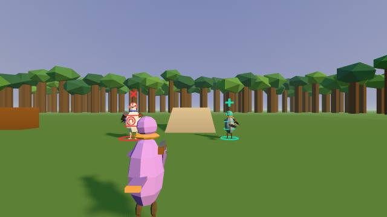
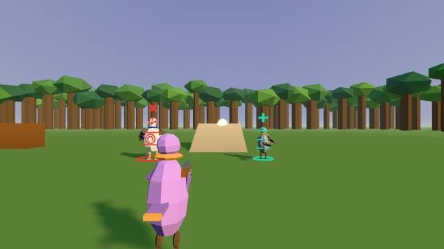
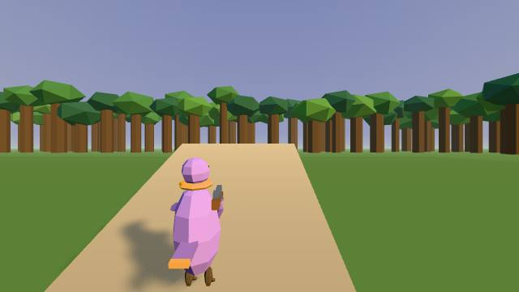

Woodpecker Playable
Gun carry · Playable since Stage 4
Appearance: vertical clinging posture leaning on a stiff, spiky prop tail; straight chisel bill; bright red crown and nape crest. Black and white barred back, white face stripes. Reads as "upright bird with a red cap and a tail it sits on".
How to play
Gun carries win fights with their weapon. They want a clear line of sight, steady aim at the head for beak shots, and the items that make the gun stronger (the Talon column). Stay behind your tanks and let the gun do the work.
Woodpecker fights with the Drum Drill, which hits instantly. Damage drops off between 16 m and 36 m, and head hits are beak shots worth ×1.65. Every level above 1 is a Molt: +35 max HP per level; +4% gun damage of base per level; +1 Song power per level; +3 melee damage per level.
Abilities
Four abilities. Slots 1 to 3 unlock at level 1, the ultimate at level 6. Each can be upgraded three times, for 1, 2, 5 AP, in order; see Ability Points. The shortest cooldown in the kit is Bore Hole at 12 s.

1. Drumroll
Rev the drill: for 6 s you fire 20% faster.
- Tier 1 · 1 AP+2 s duration (8 s) duration +2
- Tier 2 · 2 AP+10% fire rate (30%)
- Tier 3 · 5 APEach gun hit on a hero shreds 3% Talon resist for 6 s (up to 5 stacks)

2. Bore Hole
Fire a drill bit at 50 m/s up to 25 m: the first enemy hero hit takes 60 + 0.6 x SP Song damage and loses 15% Talon resist for 6 s.
- Tier 1 · 1 APShred 20% shred +0.05
- Tier 2 · 2 AP-3 s cooldown cooldown -3 s
- Tier 3 · 5 AP2 charges +1 charge

3. Tree Cling
Dash to a point within 12 m and cling there for up to 6 s: you can shoot, and your gun does +15% damage. Jump or a stun ends it.
- Tier 1 · 1 AP+6 m range (18 m) range +6 m, reach +6
- Tier 2 · 2 AP-4 s cooldown cooldown -4 s
- Tier 3 · 5 APHeal 3% of max HP a second while clinging
4. Hammerhead
For 6 s you fire 25% faster, and every 10th gun hit on the same hero detonates on it: 150 + 1.0 x SP Song damage and a 0.5 s stun.
- Tier 1 · 1 AP+3 s duration (9 s) duration +3
- Tier 2 · 2 APDetonates every 8 hits every -2
- Tier 3 · 5 APDetonations also hit enemies within 4 m of the target splash +4
Since Stage 4. See all heroes.